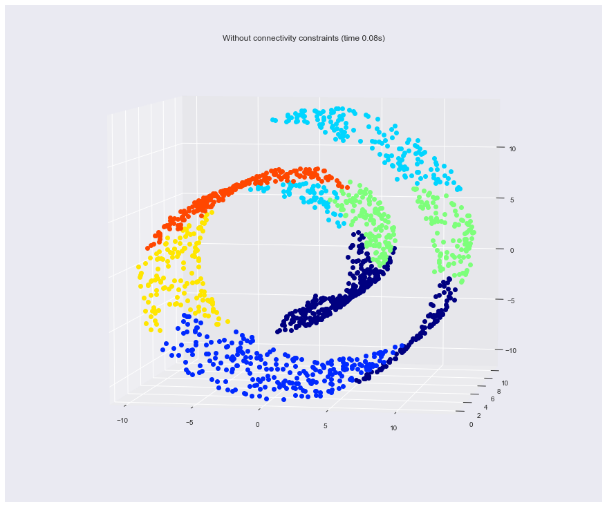
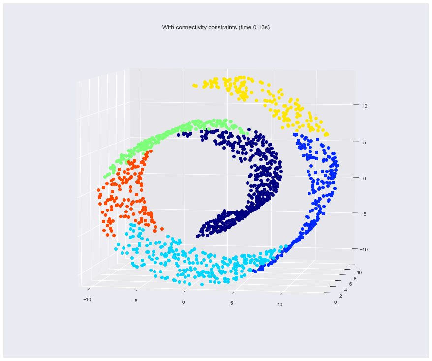
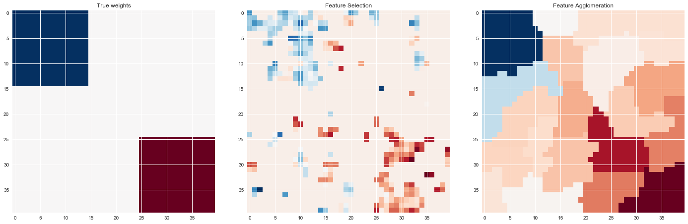
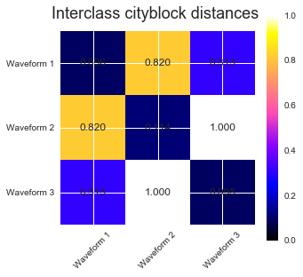
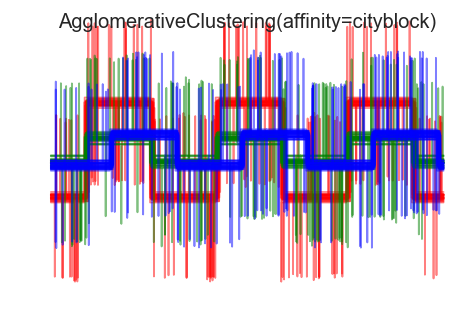

Clustering- Algglomerative
- Agglomerative-hierarchical
- DBSCAN
These codes are imported from Scikit-Learn python package for learning purpose
import matplotlib.pyplot as plt import numpy as np import seaborn as sns %matplotlib inline sns.set()
1. Feature agglomeration
These images how similar features are merged together using feature agglomeration.
- Code source: Gaël Varoquaux
- Modified for documentation by Jaques Grobler
- License: BSD 3 clause
from sklearn import datasets, cluster from sklearn.feature_extraction.image import grid_to_graph
digits = datasets.load_digits() images = digits.images X = np.reshape(images, (len(images), -1)) connectivity = grid_to_graph(*images[0].shape) agglo = cluster.FeatureAgglomeration(connectivity=connectivity, n_clusters=32) agglo.fit(X) X_reduced = agglo.transform(X)
X_restored = agglo.inverse_transform(X_reduced) images_restored = np.reshape(X_restored, images.shape) plt.figure(1, figsize=(12, 10)) plt.clf() plt.subplots_adjust(left=.01, right=.99, bottom=.01, top=.91) for i in range(4): plt.subplot(3, 4, i + 1) plt.imshow(images[i], cmap=plt.cm.gray, vmax=16, interpolation='nearest') plt.xticks(()) plt.yticks(()) if i == 1: plt.title('Original data') plt.subplot(3, 4, 4 + i + 1) plt.imshow(images_restored[i], cmap=plt.cm.gray, vmax=16, interpolation='nearest') if i == 1: plt.title('Agglomerated data') plt.xticks(()) plt.yticks(()) plt.subplot(3, 4, 10) plt.imshow(np.reshape(agglo.labels_, images[0].shape), interpolation='nearest', cmap=plt.cm.spectral) plt.xticks(()) plt.yticks(()) plt.title('Labels') plt.show()
2. Various Agglomerative Clustering on a 2D embedding of digits
LInkage: Ward,Average, Complete
An illustration of various linkage option for agglomerative clustering on a 2D embedding of the digits dataset.
The goal of this example is to show intuitively how the metrics behave, and not to find good clusters for the digits. This is why the example works on a 2D embedding.
What this example shows us is the behavior "rich getting richer" of agglomerative clustering that tends to create uneven cluster sizes. This behavior is especially pronounced for the average linkage strategy, that ends up with a couple of singleton clusters.
- Authors: Gael Varoquaux
- License: BSD 3 clause (C) INRIA 2014
from time import time from scipy import ndimage from sklearn import manifold, datasets
digits = datasets.load_digits(n_class=10) X = digits.data y = digits.target n_samples, n_features = X.shape np.random.seed(0) def nudge_images(X, y): # Having a larger dataset shows more clearly the behavior of the # methods, but we multiply the size of the dataset only by 2, as the # cost of the hierarchical clustering methods are strongly # super-linear in n_samples shift = lambda x: ndimage.shift(x.reshape((8, 8)), .3 * np.random.normal(size=2), mode='constant', ).ravel() X = np.concatenate([X, np.apply_along_axis(shift, 1, X)]) Y = np.concatenate([y, y], axis=0) return X, Y X, y = nudge_images(X, y)
#---------------------------------------------------------------------- # Visualize the clustering def plot_clustering(X_red, X, labels, title=None): x_min, x_max = np.min(X_red, axis=0), np.max(X_red, axis=0) X_red = (X_red - x_min) / (x_max - x_min) plt.figure(figsize=(12, 10)) for i in range(X_red.shape[0]): plt.text(X_red[i, 0], X_red[i, 1], str(y[i]), color=plt.cm.spectral(labels[i] / 10.), fontdict={'weight': 'bold', 'size': 9}) plt.xticks([]) plt.yticks([]) if title is not None: plt.title(title, size=17) plt.axis('off') plt.tight_layout() #---------------------------------------------------------------------- # 2D embedding of the digits dataset print("Computing embedding") X_red = manifold.SpectralEmbedding(n_components=2).fit_transform(X) print("Done.") from sklearn.cluster import AgglomerativeClustering for linkage in ('ward', 'average', 'complete'): clustering = AgglomerativeClustering(linkage=linkage, n_clusters=10) t0 = time() clustering.fit(X_red) print("%s : %.2fs" % (linkage, time() - t0)) plot_clustering(X_red, X, clustering.labels_, "%s linkage" % linkage) plt.show()
Computing embedding Done. ward : 0.41s average : 0.37s complete : 0.33s

4. Hierarchical clustering: structured vs unstructured ward
Example builds a swiss roll dataset and runs hierarchical clustering on their position.
For more information, see :ref:hierarchical_clustering.
In a first step, the hierarchical clustering is performed without connectivity constraints on the structure and is solely based on distance, whereas in a second step the clustering is restricted to the k-Nearest Neighbors graph: it's a hierarchical clustering with structure prior.
Some of the clusters learned without connectivity constraints do not respect the structure of the swiss roll and extend across different folds of the manifolds. On the opposite, when opposing connectivity constraints, the clusters form a nice parcellation of the swiss roll.
-
Authors : Vincent Michel, 2010 Alexandre Gramfort, 2010 Gael Varoquaux, 2010
-
License: BSD 3 clause
import time as time import mpl_toolkits.mplot3d.axes3d as p3 from sklearn.cluster import AgglomerativeClustering from sklearn.datasets.samples_generator import make_swiss_roll
Generate data (swiss roll dataset)
n_samples = 1500 noise = 0.05 X, _ = make_swiss_roll(n_samples, noise) # Make it thinner X[:, 1] *= .5
Compute clustering
print("Compute unstructured hierarchical clustering...") st = time.time() ward = AgglomerativeClustering(n_clusters=6, linkage='ward').fit(X) elapsed_time = time.time() - st label = ward.labels_ print("Elapsed time: %.2fs" % elapsed_time) print("Number of points: %i" % label.size)
Compute unstructured hierarchical clustering... Elapsed time: 0.08s Number of points: 1500
Results
# Plot result fig = plt.figure(figsize = [12,10]) ax = p3.Axes3D(fig) ax.view_init(7, -80) for l in np.unique(label): ax.plot3D(X[label == l, 0], X[label == l, 1], X[label == l, 2], 'o', color=plt.cm.jet(np.float(l) / np.max(label + 1))) plt.title('Without connectivity constraints (time %.2fs)' % elapsed_time) # Define the structure A of the data. Here a 10 nearest neighbors from sklearn.neighbors import kneighbors_graph connectivity = kneighbors_graph(X, n_neighbors=10, include_self=False) # Compute clustering print("Compute structured hierarchical clustering...") st = time.time() ward = AgglomerativeClustering(n_clusters=6, connectivity=connectivity, linkage='ward').fit(X) elapsed_time = time.time() - st label = ward.labels_ print("Elapsed time: %.2fs" % elapsed_time) print("Number of points: %i" % label.size) # Plot result fig = plt.figure(figsize = [12,10]) ax = p3.Axes3D(fig) ax.view_init(7, -80) for l in np.unique(label): ax.plot3D(X[label == l, 0], X[label == l, 1], X[label == l, 2], 'o', color=plt.cm.jet(float(l) / np.max(label + 1))) plt.title('With connectivity constraints (time %.2fs)' % elapsed_time) plt.show()
Compute structured hierarchical clustering... Elapsed time: 0.13s Number of points: 1500


5. Feature agglomeration vs. univariate selection
This example compares 2 dimensionality reduction strategies:
-
univariate feature selection with Anova
-
feature agglomeration with Ward hierarchical clustering
Both methods are compared in a regression problem using a BayesianRidge as supervised estimator.
- Author: Alexandre Gramfort alexandre.gramfort@inria.fr
- License: BSD 3 clause
import shutil import tempfile from scipy import linalg, ndimage from sklearn.feature_extraction.image import grid_to_graph from sklearn import feature_selection from sklearn.cluster import FeatureAgglomeration from sklearn.linear_model import BayesianRidge from sklearn.pipeline import Pipeline from sklearn.externals.joblib import Memory from sklearn.model_selection import GridSearchCV from sklearn.model_selection import KFold
Generate data
n_samples = 200 size = 40 # image size roi_size = 15 snr = 5. np.random.seed(0) mask = np.ones([size, size], dtype=np.bool) coef = np.zeros((size, size)) coef[0:roi_size, 0:roi_size] = -1. coef[-roi_size:, -roi_size:] = 1. X = np.random.randn(n_samples, size ** 2) for x in X: # smooth data x[:] = ndimage.gaussian_filter(x.reshape(size, size), sigma=1.0).ravel() X -= X.mean(axis=0) X /= X.std(axis=0) y = np.dot(X, coef.ravel()) noise = np.random.randn(y.shape[0]) noise_coef = (linalg.norm(y, 2) / np.exp(snr / 20.)) / linalg.norm(noise, 2) y += noise_coef * noise # add noise
Compute the coefs of a Bayesian Ridge with GridSearch
cv = KFold(2) # cross-validation generator for model selection ridge = BayesianRidge() cachedir = tempfile.mkdtemp() mem = Memory(cachedir=cachedir, verbose=1)
Ward agglomeration followed by BayesianRidge
connectivity = grid_to_graph(n_x=size, n_y=size) ward = FeatureAgglomeration(n_clusters=10, connectivity=connectivity, memory=mem) clf = Pipeline([('ward', ward), ('ridge', ridge)])
Select the optimal number of parcels with grid search
clf = GridSearchCV(clf, {'ward__n_clusters': [10, 20, 30]}, n_jobs=1, cv=cv) clf.fit(X, y) # set the best parameters coef_ = clf.best_estimator_.steps[-1][1].coef_ coef_ = clf.best_estimator_.steps[0][1].inverse_transform(coef_) coef_agglomeration_ = coef_.reshape(size, size)
________________________________________________________________________________
[Memory] Calling sklearn.cluster.hierarchical.ward_tree...
ward_tree(array([[-0.451933, ..., -0.675318],
...,
[ 0.275706, ..., -1.085711]]),
<1600x1600 sparse matrix of type '<class 'numpy.int64'>'
with 7840 stored elements in COOrdinate format>, n_clusters=None)
________________________________________________________ward_tree - 0.1s, 0.0min
________________________________________________________________________________
[Memory] Calling sklearn.cluster.hierarchical.ward_tree...
ward_tree(array([[ 0.905206, ..., 0.161245],
...,
[-0.849835, ..., -1.091621]]),
<1600x1600 sparse matrix of type '<class 'numpy.int64'>'
with 7840 stored elements in COOrdinate format>, n_clusters=None)
________________________________________________________ward_tree - 0.1s, 0.0min
________________________________________________________________________________
[Memory] Calling sklearn.cluster.hierarchical.ward_tree...
ward_tree(array([[ 0.905206, ..., -0.675318],
...,
[-0.849835, ..., -1.085711]]),
<1600x1600 sparse matrix of type '<class 'numpy.int64'>'
with 7840 stored elements in COOrdinate format>, n_clusters=None)
________________________________________________________ward_tree - 0.1s, 0.0min
Anova univariate feature selection followed by BayesianRidge
f_regression = mem.cache(feature_selection.f_regression) # caching function anova = feature_selection.SelectPercentile(f_regression) clf = Pipeline([('anova', anova), ('ridge', ridge)]) # Select the optimal percentage of features with grid search clf = GridSearchCV(clf, {'anova__percentile': [5, 10, 20]}, cv=cv) clf.fit(X, y) # set the best parameters coef_ = clf.best_estimator_.steps[-1][1].coef_ coef_ = clf.best_estimator_.steps[0][1].inverse_transform(coef_.reshape(1, -1)) coef_selection_ = coef_.reshape(size, size)
________________________________________________________________________________
[Memory] Calling sklearn.feature_selection.univariate_selection.f_regression...
f_regression(array([[-0.451933, ..., 0.275706],
...,
[-0.675318, ..., -1.085711]]),
array([ 25.267703, ..., -25.026711]))
_____________________________________________________f_regression - 0.0s, 0.0min
________________________________________________________________________________
[Memory] Calling sklearn.feature_selection.univariate_selection.f_regression...
f_regression(array([[ 0.905206, ..., -0.849835],
...,
[ 0.161245, ..., -1.091621]]),
array([ -27.447268, ..., -112.638768]))
_____________________________________________________f_regression - 0.0s, 0.0min
________________________________________________________________________________
[Memory] Calling sklearn.feature_selection.univariate_selection.f_regression...
f_regression(array([[ 0.905206, ..., -0.849835],
...,
[-0.675318, ..., -1.085711]]),
array([-27.447268, ..., -25.026711]))
_____________________________________________________f_regression - 0.0s, 0.0min
Results
# Inverse the transformation to plot the results on an image plt.close('all') plt.figure(figsize=(20, 8)) plt.subplot(1, 3, 1) plt.imshow(coef, interpolation="nearest", cmap=plt.cm.RdBu_r) plt.title("True weights") plt.subplot(1, 3, 2) plt.imshow(coef_selection_, interpolation="nearest", cmap=plt.cm.RdBu_r) plt.title("Feature Selection") plt.subplot(1, 3, 3) plt.imshow(coef_agglomeration_, interpolation="nearest", cmap=plt.cm.RdBu_r) plt.title("Feature Agglomeration") plt.subplots_adjust(0.04, 0.0, 0.98, 0.94, 0.16, 0.26) plt.show() # Attempt to remove the temporary cachedir, but don't worry if it fails shutil.rmtree(cachedir, ignore_errors=True)

6. Agglomerative clustering with and without structure
This example shows the effect of imposing a connectivity graph to capture local structure in the data. The graph is simply the graph of 20 nearest neighbors.
Two consequences of imposing a connectivity can be seen. First clustering with a connectivity matrix is much faster.
Second, when using a connectivity matrix, average and complete linkage are unstable and tend to create a few clusters that grow very quickly. Indeed, average and complete linkage fight this percolation behavior by considering all the distances between two clusters when merging them. The connectivity graph breaks this mechanism. This effect is more pronounced for very sparse graphs (try decreasing the number of neighbors in kneighbors_graph) and with complete linkage. In particular, having a very small number of neighbors in the graph, imposes a geometry that is close to that of single linkage, which is well known to have this percolation instability.
- Authors: Gael Varoquaux, Nelle Varoquaux
- License: BSD 3 clause
import time from sklearn.cluster import AgglomerativeClustering from sklearn.neighbors import kneighbors_graph
Generate sample data
n_samples = 1500 np.random.seed(0) t = 1.5 * np.pi * (1 + 3 * np.random.rand(1, n_samples)) x = t * np.cos(t) y = t * np.sin(t) X = np.concatenate((x, y)) X += .7 * np.random.randn(2, n_samples) X = X.T
Results
# Create a graph capturing local connectivity. Larger number of neighbors # will give more homogeneous clusters to the cost of computation # time. A very large number of neighbors gives more evenly distributed # cluster sizes, but may not impose the local manifold structure of # the data knn_graph = kneighbors_graph(X, 30, include_self=False) for connectivity in (None, knn_graph): for n_clusters in (30, 3): plt.figure(figsize=(10, 4)) for index, linkage in enumerate(('average', 'complete', 'ward')): plt.subplot(1, 3, index + 1) model = AgglomerativeClustering(linkage=linkage, connectivity=connectivity, n_clusters=n_clusters) t0 = time.time() model.fit(X) elapsed_time = time.time() - t0 plt.scatter(X[:, 0], X[:, 1], c=model.labels_, cmap=plt.cm.spectral) plt.title('linkage=%s (time %.2fs)' % (linkage, elapsed_time), fontdict=dict(verticalalignment='top')) plt.axis('equal') plt.axis('off') plt.subplots_adjust(bottom=0, top=.89, wspace=0, left=0, right=1) plt.suptitle('n_cluster=%i, connectivity=%r' % (n_clusters, connectivity is not None), size=17) plt.show()


7. Agglomerative clustering with different metrics
Demonstrates the effect of different metrics on the hierarchical clustering.
The example is engineered to show the effect of the choice of different metrics. It is applied to waveforms, which can be seen as high-dimensional vector. Indeed, the difference between metrics is usually more pronounced in high dimension (in particular for euclidean and cityblock).
We generate data from three groups of waveforms. Two of the waveforms (waveform 1 and waveform 2) are proportional one to the other. The cosine distance is invariant to a scaling of the data, as a result, it cannot distinguish these two waveforms. Thus even with no noise, clustering using this distance will not separate out waveform 1 and 2.
We add observation noise to these waveforms. We generate very sparse noise: only 6% of the time points contain noise. As a result, the l1 norm of this noise (ie "cityblock" distance) is much smaller than it's l2 norm ("euclidean" distance). This can be seen on the inter-class distance matrices: the values on the diagonal, that characterize the spread of the class, are much bigger for the Euclidean distance than for the cityblock distance.
When we apply clustering to the data, we find that the clustering reflects what was in the distance matrices. Indeed, for the Euclidean distance, the classes are ill-separated because of the noise, and thus the clustering does not separate the waveforms. For the cityblock distance, the separation is good and the waveform classes are recovered. Finally, the cosine distance does not separate at all waveform 1 and 2, thus the clustering puts them in the same cluster.
- Author: Gael Varoquaux
- License: BSD 3-Clause or CC-0
from sklearn.cluster import AgglomerativeClustering from sklearn.metrics import pairwise_distances np.random.seed(0)
Generate waveform data
n_features = 2000 t = np.pi * np.linspace(0, 1, n_features) def sqr(x): return np.sign(np.cos(x)) X = list() y = list() for i, (phi, a) in enumerate([(.5, .15), (.5, .6), (.3, .2)]): for _ in range(30): phase_noise = .01 * np.random.normal() amplitude_noise = .04 * np.random.normal() additional_noise = 1 - 2 * np.random.rand(n_features) # Make the noise sparse additional_noise[np.abs(additional_noise) < .997] = 0 X.append(12 * ((a + amplitude_noise) * (sqr(6 * (t + phi + phase_noise))) + additional_noise)) y.append(i) X = np.array(X) y = np.array(y) n_clusters = 3 labels = ('Waveform 1', 'Waveform 2', 'Waveform 3')
Results
# Plot the ground-truth labelling plt.figure() plt.axes([0, 0, 1, 1]) for l, c, n in zip(range(n_clusters), 'rgb', labels): lines = plt.plot(X[y == l].T, c=c, alpha=.5) lines[0].set_label(n) plt.legend(loc='best') plt.axis('tight') plt.axis('off') plt.suptitle("Ground truth", size=20) # Plot the distances for index, metric in enumerate(["cosine", "euclidean", "cityblock"]): avg_dist = np.zeros((n_clusters, n_clusters)) plt.figure(figsize=(5, 4.5)) for i in range(n_clusters): for j in range(n_clusters): avg_dist[i, j] = pairwise_distances(X[y == i], X[y == j], metric=metric).mean() avg_dist /= avg_dist.max() for i in range(n_clusters): for j in range(n_clusters): plt.text(i, j, '%5.3f' % avg_dist[i, j], verticalalignment='center', horizontalalignment='center') plt.imshow(avg_dist, interpolation='nearest', cmap=plt.cm.gnuplot2, vmin=0) plt.xticks(range(n_clusters), labels, rotation=45) plt.yticks(range(n_clusters), labels) plt.colorbar() plt.suptitle("Interclass %s distances" % metric, size=18) plt.tight_layout() # Plot clustering results for index, metric in enumerate(["cosine", "euclidean", "cityblock"]): model = AgglomerativeClustering(n_clusters=n_clusters, linkage="average", affinity=metric) model.fit(X) plt.figure() plt.axes([0, 0, 1, 1]) for l, c in zip(np.arange(model.n_clusters), 'rgbk'): plt.plot(X[model.labels_ == l].T, c=c, alpha=.5) plt.axis('tight') plt.axis('off') plt.suptitle("AgglomerativeClustering(affinity=%s)" % metric, size=20) plt.show()




